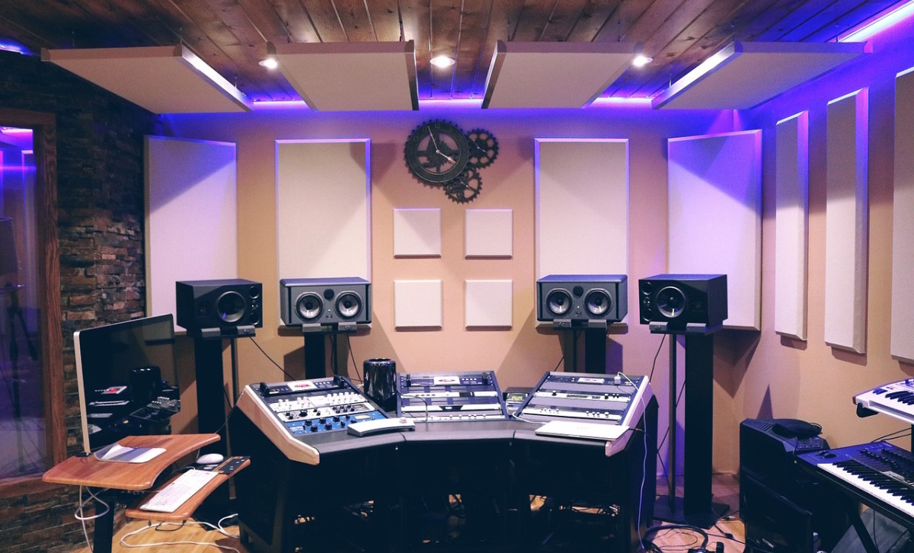

RayoTheBoss
Nigerian Producer
Welcome to the world of RayoTheBoss,
the innovative and dynamic Nigerian music
producer taking the industry by storm! With
a passion for creating infectious beats and a
knack for fusing genres,
RayotheBoss brings a unique sound that resonates
with music lovers worldwide.
From Hip-Hop to Afrobeats and beyond, his productions
are stamped with a signature blend of energy,
creativity, and expertise.
collaborating with artists from around the globe
, RayoTheBoss continues to push the boundaries of
music production. Stay tuned for new releases and exciting
projects from this rising star.
Hobbies
- Dancing
- Singing
- Playing Video games
Work Experience
Producer | RAYOTHEBOSS Ent., Lagos, Nigeria | January 2022 - Present
- Conceptualized and produced a range of projects,
including commercials, music videos, and short films,
ensuring alignment with client objectives and creative vision.
- Collaborated closely with diverse teams,
overseeing pre-production, production, and
post-production phases to deliver high-quality
content within established timelines.
- Managed budgets effectively, optimizing resources to
achieve cost efficiency without compromising on creative excellence.
- Developed and maintained strong relationships with
clients, artists, and crew members, fostering a
collaborative and positive working environment.
- Stayed updated on industry trends and technological
advancements, incorporating innovative
techniques into production processes.
Skills
| -Project Management |
-Budgeting and Cost Control |
| -Team Collaboration |
-Creative Conceptualization |
| -Client Relationship Management |
-Industry Trend Awareness |
Education
Contact Me